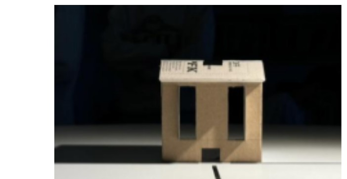

4th-year Architectural Conservation and Sustainability Engineering student at Carleton University, focused on building performance simulation, envelope design, and structural analysis.
Applying an engineering background in modeling and statistical analysis to player evaluation, draft analysis, and team strategy research across MLB, NBA, and NHL.
Colin Murray — 4th-year Architectural Conservation and Sustainability Engineering student at Carleton University, graduating April 2027. Work spans building performance simulation, envelope design and analysis, Revit documentation, and structural systems.
Selected projects include the original Revit model of Alvar Aalto's Experimental House and a forensic redesign of its wall, roof, and window assemblies for thermal performance and embodied carbon; a south-facing Ottawa façade designed to ASHRAE standards and validated against a 1:30 scale heliodon model; an EnergyPlus net-zero upgrade pathway for the Canal Building; and a calibrated OpenStudio model benchmarked against ASHRAE Guideline 14 CV(RMSE) thresholds.
Available Part-time / Full-time. Fluent in English, working proficiency in French.


Alvar Aalto, Muuratsalo, Finland (1953) — Group of 6, Carleton University
The original Revit model of the full house was developed from drawings and site documentation as the foundation for the group's analysis. The group then mapped the original wall, roof, window, and floor assemblies and redesigned each for thermal performance and embodied carbon, with UA-value compliance checked against the 2020 IECC residential code, a full life-cycle assessment, and a climate-relocation study. Sheets credited directly include the window assembly — modeling the original 1950s double-sash unit against a redesigned triple-glazed, low-E, argon-filled assembly — and the material sourcing research documenting the timber and brick supply chains.

Group 15 — Ottawa climate-responsive home façade
Designed a south-facing residential façade combining advanced envelope insulation, triple-glazed low-E argon windows, and an overhang/side-fin shading system tuned to Ottawa's solar geometry. Physical 1:30 scale model validated against a heliodon, confirming full shading 9am–3pm from May–July and full solar penetration in December. PV array sized using PVWatts and linear interpolation to exceed the 500 kWh/year generation target.
Python + EnergyPlus model — the Canal Building, Ottawa
Built a full EnergyPlus/Python upgrade-pathway model evaluating lighting, envelope, plug-load, PV, and heat pump retrofits both independently and combined, quantifying interaction effects between upgrades (sum-of-parts vs. whole-building, 2.05% discrepancy). Modeled GHG emissions under Federal vs. hourly "Max" grid-intensity scenarios, evaluated carbon tax payback at $0/$80/$170 per tonne, and demonstrated a fully net-zero EUI pathway combining a 70% lighting reduction with 50% roof-coverage PV.
OpenStudio / EnergyPlus — calibration against measured building data
Calibrated an OpenStudio model against measured natural gas and electricity consumption through three rounds of iteration on solar/thermal absorptance, internal gains, and infiltration, then checked the result against ASHRAE Guideline 14 thresholds for CV(RMSE) and nMBE. The natural gas calibration cleared the 15% CV(RMSE) threshold; electricity came in far over, which traced back to the ideal-loads HVAC simplification removing equipment cycling losses and overstating summer cooling. Phase II tested LED lighting, plug-load scheduling, and wall insulation upgrades both separately and combined, cutting electricity use from 129 GJ/yr to 77.3 GJ/yr with natural gas held close to baseline.


Drawn by Colin Murray — early Revit and documentation practice
An early Revit exercise focused on construction documentation conventions rather than design: a massing render, two-level floor plans, a building section, and a 1:10 wall detail specifying the brick veneer / air gap / blockwork / insulation assembly, all set up with proper title blocks, scales, and revision schedules. Useful mainly as a record of learning the actual drafting standards architecture firms expect, before applying them to the more developed projects elsewhere on this page.


Carleton University — Team Captain & Design Lead, 6-person team
Team captain and design lead of a competition team that began with 6 members; one withdrew from university mid-year, and the team carried the full competition with 5. As captain (second year leading the team), responsibility covered structural design, back-end logistics (accounting and event setup, coordinated with Carleton's club leads), and all written reports. The bridge is a popsicle-stick tied-arch using Nielsen-type hanger geometry to minimize deflection and vertical force. Each arch was laminated from roughly 20 layers of sticks, cut and sanded to a drawn boundary, with braided dental-floss cables acting as the tension hangers. The arch connection detail was iterated mid-build for both bandsaw manufacturability and structural clarity, and a third deck support was added after identifying deflection instability as a likely failure point under load.
Original analysis, updated as each project moves from data pull to write-up.
Tests whether Toronto's offense performs significantly better against starters they've faced multiple times in a season versus first-time or late call-up starters, using Statcast PA-level outcomes (xwOBA, wRC+) rather than surface ERA splits. Motivated by the Jays' 2025 run — strong against scouted, regularly-seen aces, apparently vulnerable to unfamiliar call-ups.
A model that takes publicly available pre-draft Statcast and scouting metrics (exit velocity, barrel %, spin rate, FV grades) and outputs a value-over-slot score for an upcoming draft class, benchmarked against historical outcomes.
A tiered big board for the 2026 NBA draft class, ranked on scalability and projected playoff/analytical value rather than raw counting stats — built from per-36 advanced numbers (BPM, true shooting, usage). Full board with player breakdowns below.
A written piece on how new hitting coach David Popkins helped move Toronto's offense from 23rd to 4th in runs scored with largely the same roster — and what that says about preparation-driven performance versus personnel.
Ranked by how well each player's production translates to a winning lineup. Tiers reflect floor/ceiling read, not just where scouts have them.
Stats are per-36 minutes from Tankathon's 2026 big board. The tiers reflect a read on connective value and scalability — not empty counting stats. The players who matter in the playoffs are the ones who play defense, move the ball, and make the team around them better; those skills show up in BPM, DBPM, and TS% more reliably than in raw scoring averages. Usage rate is a key input too: a player posting 24 points at 30% usage is doing something categorically different than 19 points at 21% usage, and the tiers try to separate those out. Per-game PTS, AST, BLK, and STL are listed alongside the advanced numbers for context.
Boozer's BPM of 18.7 is historically elite for an 18-year-old — only Zion Williamson has posted a higher number at that age. What makes him the safest pick in the class is how the production comes: real, shared usage (29.9%), strong on both ends (12.7 OBPM, 6.0 DBPM), and a size/shooting/IQ combination that plugs into any system without structural changes. He's not going to be a top-5 all-time player, but a yearly All-NBA candidate who can affect playoff series from day one with his shooting, IQ, and toughness is a real outcome. His floor — a serious starter who already looks like one — is arguably the highest in the class.
As an offensive creator, his ceiling is as high as anyone in this class. He carries the highest usage in the top four (33.5%) and posts a BPM of 14.1 under that load, with shot creation off the dribble and movement scoring that projects to a primary or secondary initiator role on a winning team. True shooting at 57.8% is the one number that trails the group at that workload; that tends to improve as the players around you get better. His connective ability as a playmaker is real and scalable. Floor is a reliable starter; the ceiling conversation is franchise player.
Led the nation at 25.5 points per game, and the size makes the offensive load scalable in a way a guard doing the same thing isn't — a 6'10" wing with three-level scoring and shot creation off the dribble creates different problems than a guard with the same skills. BPM of 11.7 is the lowest in this tier, driven almost entirely by the offensive number. The defensive activity (DBPM 2.2) is where the development question sits — if that catches up to the physical tools, the overall profile is a franchise-level two-way player. If it doesn't, you still have a high-usage wing scorer who can carry an offense.
Best two-way profile in the class outside Boozer — 5.3 DBPM and 1.4 blocks per 36 at 6'10.5" is positional, scalable defensive value that travels regardless of offensive role. Before hand injuries ended his season, he was outperforming Boozer, Peterson, and Dybantsa head-to-head per NBA.com tracking. His connective value on defense — switching, protecting the rim, anticipating passing lanes — is exactly what holds up in playoff series. The offensive shot-creation piece is still developing, which is the gap between him and the top three, but with his size, IQ, and defensive instincts, the floor here is a serious starter who can affect playoff games from night one.
Efficient at a lower usage (25.2%) than the guards around him — stays productive without needing to dominate possession, which is a genuinely useful quality on a team that already has primary ball-handlers. BPM of 12.3 and DBPM of 3.5 show real value on both ends. Dropped 46 in a top-10 road win (B1G freshman record), but the floor is built on consistency more than ceiling plays. Can slot in at the one or two and do things on both sides of the ball without requiring structural adjustments. Floor is a solid starter; ceiling depends on how far the off-dribble creation develops.
Best defensive guard in the class by DBPM (6.0 — matching Boozer's defensive number, which says something). Elite anticipation and quick hands that show up on film as much as in the box score. His connective defensive value — creating turnovers, disrupting passing lanes, guarding multiple positions — is exactly what holds up in playoff series when offenses have a plan. Offensive consistency is where the questions are: 42-point games alongside single-digit ones in the same season. One NBA agent in pre-draft coverage called him a "10-year starter" floor, and that reads right given the defensive toolkit. Ceiling is a high-impact starter if the offensive game tightens.
One of the most dynamic offensive freshmen in recent memory — 6.6 assists per 36, 24.1 points, 44% from three on real volume. The offense is genuinely elite and the playmaking shows real feel for the game. The hole is the defensive number: DBPM of 0.7 is the lowest of anyone on this board, and that's the thing that gets targeted in a playoff series once a team has a scouting report. His connective value is almost entirely offensive, which caps the projection compared to Flemings. Floor is a starting-calibre guard who can score from anywhere; ceiling with defensive improvement is legitimate All-Star.
Balanced two-way guard at a moderate usage (23.2%) — DBPM of 5.7 and OBPM of 6.0 means positive value on both ends without requiring heavy ball possession. His connective game on defense and the ability to produce efficiently without dominating possessions makes him a lower-variance pick than the guards ranked around him. Floor and ceiling are close together here — more certainty than upside — but a high-impact starter who plays both sides of the ball and doesn't have a hole in his game is a valuable pick.
High-usage guard (31.4% USG) with 22.4 points and 5.8 assists per 36. The offensive production and playmaking are real, but TS% of 57.7% at that usage rate is where the efficiency questions sit — not poor, but not dominant either at that workload. Defensive number (DBPM 1.7) is middling. The floor here is a capable role player on a winning team; ceiling is high-impact starter if the efficiency and defensive activity improve at the next level.
7'4" center who helped Michigan win the national title, with advanced numbers that are genuinely hard to ignore at his size: BPM 14.3, DBPM 8.4, and 4.0 blocks per 36. Opponents shot 54.5% at the rim with him on the court versus over 60% when he was off it — that's measurable, scalable defensive impact. The 3.7 assists per 36 suggests real court vision for a center, and 65.9% TS shows he's not just catching lobs. A 7'4" shot-blocker with that level of DBPM and rim protection belongs above Ament here — the defensive connective value alone justifies the ranking.
Size and athleticism at the wing are real, and BPM of 8.4 at 29% USG shows meaningful production against solid SEC competition. TS% of 53.4% is the concern — below-average efficiency at that usage rate suggests the offensive game needs work before it translates cleanly. DBPM of 3.3 is solid. The physical profile is worth a lottery pick; the offensive efficiency is the question mark on how high the ceiling goes. Floor is a role player on a winning team who contributes on the glass and defensively; ceiling is high-impact starter if the shooting develops.
Senior who posted the second-highest BPM on this board (16.7) at the lowest usage (20.4%). That combination — high positive impact on both ends while barely touching the ball — is unusual and points to genuine connective value: screening, relocating, making the right play, defending multiple positions. The age (23.7) is the scout knock, and it's a real one. But the two-way efficiency numbers at Michigan's level are hard to ignore. Floor is a solid role player; ceiling is high-impact starter if the athleticism holds at the NBA level.
Athletic scoring guard with 1.4 blocks per 36 at the two — that's unusual defensive activity for a wing and shows up on film as an ability to contest and alter shots that doesn't fit his position profile on paper. BPM of 9.2 at moderate usage. DBPM of 2.3 is held up more by the athleticism/blocks than by positional defense, which is where the translation questions sit. Good role-player floor; ceiling is a solid starter if the defensive positioning catches up to the physical tools.
67.7% TS at 21.3% USG is efficient role-player production, and 1.6 blocks per 36 alongside 10.5 rebounds shows real interior presence. The question is the offensive playmaking (1.7 assists per 36) — Johnson operates as a catch-and-finish big rather than a ball-mover, which limits what a team can run through him. BPM data incomplete at time of writing. Floor is a valued bench piece who can rebound and protect the rim; ceiling is a starter if the offensive game around the paint develops enough to hold a starting spot on a good team.
Per-36 stats from Tankathon's 2026 big board. Draft order through the lottery confirmed from ESPN post-lottery results. Rankings and tiering are my own — stats sourced, analysis isn't.
Long-form analysis, posted here as each piece is finished.
Calm and grounded communication style that maintains a positive and professional working environment. Effective and logical problem-solving approach to identify and resolve problems efficiently. Engaging coach and team player who collaborates well through positive, constructive feedback.
Languages: fluent in English, working proficiency in French (oral and written).
Intramural hockey. Multi-instrumentalist.